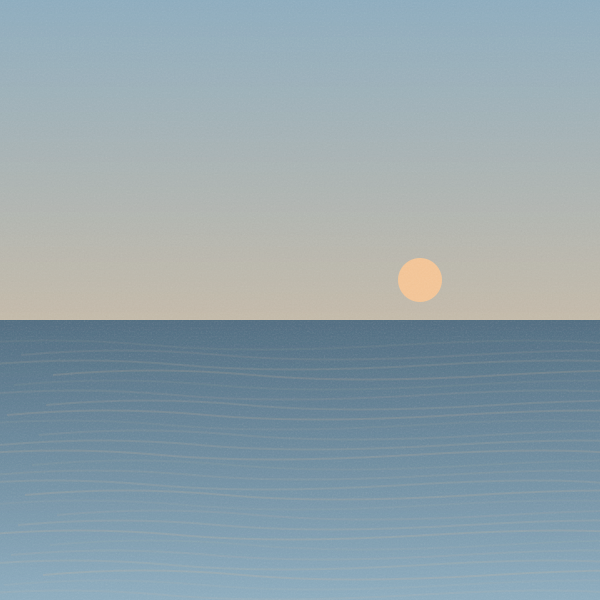
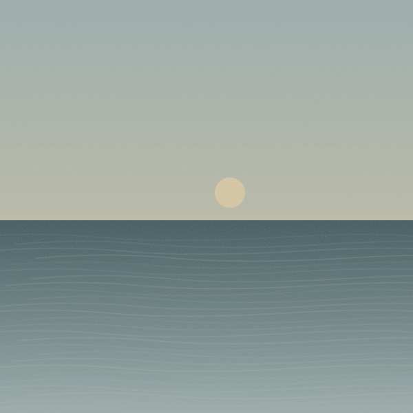
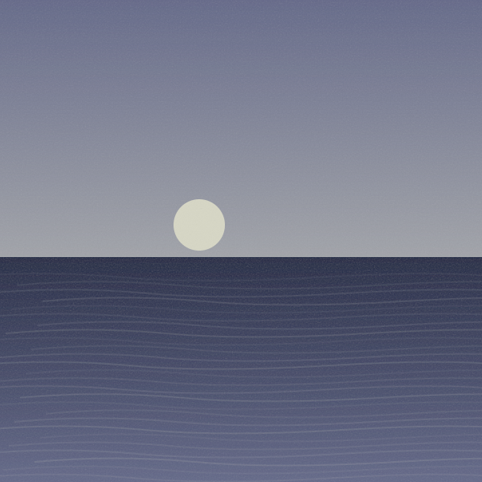

<meta charset="utf-8"><title>听屿 · 全应用视觉审查提案</title><style>*{box-sizing:border-box}body{margin:0;background:#edeae7;color:#29262b;font-family:-apple-system,BlinkMacSystemFont,"PingFang SC",sans-serif}main{width:1712px;padding:44px 40px}.mast{display:flex;align-items:end;justify-content:space-between;margin-bottom:28px}.mast h1{font-size:34px;margin:0 0 8px}.mast p{margin:0;color:#716b73;font-size:16px}.tag{font-size:14px;color:#a6355c;border:1px solid #d5bbc4;padding:9px 14px;border-radius:20px}.grid{display:grid;grid-template-columns:repeat(4,390px);gap:24px}.label{font-size:16px;margin:0 0 14px;font-weight:600}.caption{font-size:14px;color:#746b72;margin:14px 0 30px;line-height:1.6}.phone{position:relative;width:390px;height:844px;background:#fcf9fa;border:1px solid #ded8db;border-radius:36px;overflow:hidden;box-shadow:0 12px 30px #44303d09}.status{height:44px;padding:14px 26px;display:flex;justify-content:space-between;font-size:13px}header{display:flex;align-items:center;padding:12px 20px 18px;gap:6px}h1{font-size:28px;letter-spacing:-1px;margin:0;flex:1}h2{font-size:21px;margin:0 0 18px;font-weight:650}h3{font-size:19px;margin:24px 0 14px}.btn{height:48px;width:48px;display:inline-flex;justify-content:center;align-items:center;flex-shrink:0}svg{height:23px;width:23px}.red,.selected{color:#bd3563}.content{padding:0 22px}.muted,small{color:#786e77}small{display:block;font-size:13px;line-height:1.6}.cover{width:48px;height:48px;object-fit:cover;border-radius:10px;flex-shrink:0}.info{min-width:0;flex:1}.info b{font-size:15px;font-weight:550;display:block;overflow:hidden;text-overflow:ellipsis;white-space:nowrap}.row{display:flex;align-items:center;gap:12px;min-height:78px}.row.active{background:#f7eaf0;border-radius:14px;margin:0 -10px;padding:0 10px}.dock{position:absolute;bottom:0;width:100%;padding:0 12px;background:linear-gradient(transparent,#fcf9fa80 20%)}.mini,nav{background:#fff9;backdrop-filter:blur(24px) saturate(1.25);border:1px solid #ffffffc9;box-shadow:0 5px 24px #49313f0c}.mini{display:flex;align-items:center;gap:10px;padding:8px;border-radius:22px;margin-bottom:8px}.mini .btn{width:40px}.mini .cover{width:44px;height:44px}.mini b{font-size:14px}nav{height:76px;border-radius:25px;display:flex;justify-content:space-around;padding-top:12px}nav>div{text-align:center;width:70px;color:#797078}nav .selected{color:#bd3563}nav svg{width:23px;height:23px}nav small{font-size:11px;color:inherit}.homebar{width:124px;height:5px;background:#302a31;border-radius:8px;margin:14px auto 8px}.toolbar{display:flex;align-items:center;gap:3px;margin:20px 0 8px}.primary{background:#bd3563;color:white;border-radius:25px;padding:0 18px;display:flex;gap:8px;align-items:center;height:46px;font-size:14px}.spacer{flex:1}.empty{text-align:center;padding:95px 0 0}.empty .emblem{height:76px;width:76px;border-radius:50%;background:#f3e8ec;margin:auto;display:grid;place-items:center;color:#bd3563}.empty .emblem svg{height:32px;width:32px}.empty h2{margin:25px 0 10px}.empty p{font-size:14px;line-height:1.8;color:#786e77}.empty .primary{display:inline-flex;margin-top:16px}.summary{display:flex;gap:20px;align-items:center}.summary .cover{height:102px;width:102px;border-radius:18px}.tabs{display:flex;gap:28px;border-bottom:1px solid #e8e0e4;margin:12px 0 16px;height:50px}.tabs span{padding:10px 0;font-size:16px}.tabs .selected{border-bottom:3px solid;font-weight:600}.hero{width:100%;height:180px;border-radius:20px;object-fit:cover}.heroBox{position:relative}.heroBox .heroText{position:absolute;bottom:18px;left:18px;color:#fff}.heroText h2{margin:0 0 4px}.shelf{display:flex;gap:12px}.shelf>div{width:142px;flex-shrink:0}.shelf .cover{width:142px;height:130px;border-radius:14px}.shelf b{display:block;font-size:14px;margin-top:8px}.searchbox{display:flex;align-items:center;gap:8px;background:#eee9ed;border-radius:16px;padding:5px 12px;color:#786e77;margin:4px 0 20px}.chips{display:flex;gap:8px}.chips span{background:#eee9ed;padding:9px 13px;border-radius:20px;font-size:13px}.tiles{display:grid;grid-template-columns:1fr 1fr;gap:12px}.tile{height:105px;border-radius:16px;color:white;padding:18px;background:linear-gradient(135deg,#668e91,#304851)}.tile:nth-child(2){background:linear-gradient(135deg,#c19b9d,#765c73)}.tile:nth-child(3){background:linear-gradient(135deg,#c7a281,#7d6957)}.tile:nth-child(4){background:linear-gradient(135deg,#8c9cba,#4d617a)}.tile b{display:block;font-size:19px;margin-bottom:8px}.shade{position:absolute;inset:0;background:#26202b40}.sheet{position:absolute;bottom:0;width:100%;background:#fcf9faf5;backdrop-filter:blur(28px);border-top:1px solid #fff;border-radius:28px 28px 0 0;padding:10px 22px 28px}.handle{width:38px;height:4px;border-radius:5px;background:#d8cbd2;margin:0 auto 22px}.sheet h2{font-size:20px}.action{display:flex;align-items:center;min-height:57px;font-size:16px;gap:7px}.action .btn{width:38px}.action small{font-size:12px}.divider{height:1px;background:#e7dfe3;margin:12px 0}.playerArt{width:300px;height:300px;display:block;margin:24px auto 26px;border-radius:22px}.playerTitle{display:flex;align-items:center}.playerTitle h1{font-size:27px}.progress{height:4px;background:#e3d9e0;border-radius:4px;margin-top:35px}.progress:before{content:"";display:block;width:62%;height:4px;background:#bd3563}.times{display:flex;justify-content:space-between;font-size:11px;color:#786e77;margin-top:10px}.controls{display:flex;align-items:center;justify-content:space-between;margin:22px 0}.controls .big{height:70px;width:70px;border-radius:50%;background:#bd3563;color:white}.big svg{width:29px;height:29px}.field{background:#efeaee;border:1px solid #e6dfe4;border-radius:13px;padding:15px;margin:8px 0 18px;font-size:14px;color:#685e68}.field.large{height:115px}.formlabel{font-size:12px;color:#786e77}.formbtns{display:flex;justify-content:flex-end;gap:18px;align-items:center;margin-top:22px}.setting{display:flex;align-items:center;justify-content:space-between;min-height:57px;border-bottom:1px solid #eae3e7;font-size:15px}.themechips{display:flex;gap:9px}.themechips div{width:74px;height:88px;border-radius:14px;border:1px solid #ddd4da;padding:9px;background:#f8e8ef}.themechips div:nth-child(2){background:#f7ecdf}.themechips div:nth-child(3){background:#e7eef8}.themechips div:nth-child(4){background:#282831;color:#fff}.themechips i{display:block;height:36px;background:#ffffff70;border-radius:6px;margin-bottom:8px}.themechips small{font-size:11px;color:inherit}.note{font-size:13px;color:#786e77;line-height:1.7}.moon{background:#f5f8fc;color:#263348}.moon .primary{background:#355d98}.moon .selected{color:#355d98}.moon .row.active{background:#e7edf6}.moon .mini,.moon nav{background:#f6faffae}.moon .dock{background:linear-gradient(transparent,#f5f8fc80)}.night{background:#18191f;color:#f0edf4}.night small{color:#b4adbb}.night .primary{background:#c8b4ef;color:#271a3e}.night .row.active{background:#302b3c}.night .mini,.night nav{background:#2d2c37bd;border-color:#ffffff12}.night .selected{color:#d1b6f4}.night .dock{background:linear-gradient(transparent,#18191f80)}.night .homebar{background:#ded7e8}</style><main><div class="mast"><div><h1>听屿 · 让声音成为主角</h1><p>统一视觉提案 · 哔哩粉保留，降低铺色，以内容、留白与磨玻璃建立层次</p></div><div class="tag">待确认稿 · 2026.10.18</div></div><div class="grid"><article><div class="label">01 / 音乐库</div><div class="phone "><div class="status"><b>9:41</b><span>▂▄▆　▰</span></div><header><h1>随心听</h1><span class="btn "><svg viewBox="0 0 24 24" fill="none" stroke="currentColor" stroke-width="1.7" stroke-linecap="round" stroke-linejoin="round"><path d="M20 20l-5-5 M17 10a7 7 0 1 1-14 0 7 7 0 0 1 14 0"/></svg></span></header><div class="content"><div class="heroBox"><div class="heroText"><small style="color:#fff">继续收听</small><h2>归途的光</h2></div></div><h3>我的歌单</h3><div class="shelf"><div><b>日常 BGM</b><small>51 首歌曲</small></div><div><b>晚风与海</b><small>24 首歌曲</small></div></div><h3>歌曲</h3><div class="row "><div class="info"><b>山间来信</b><small>音乐收藏 · 自选曲目</small></div><span class="btn "><svg viewBox="0 0 24 24" fill="none" stroke="currentColor" stroke-width="1.7" stroke-linecap="round" stroke-linejoin="round"><path d="M5 12h.01 M12 12h.01 M19 12h.01"/></svg></span></div><div class="row "><div class="info"><b>缓慢的夏天</b><small>音乐收藏 · 自选曲目</small></div><span class="btn "><svg viewBox="0 0 24 24" fill="none" stroke="currentColor" stroke-width="1.7" stroke-linecap="round" stroke-linejoin="round"><path d="M5 12h.01 M12 12h.01 M19 12h.01"/></svg></span></div></div><div class="dock"><div class="mini"><div class="info"><b>归途的光</b><small>4K无损音乐</small></div><span class="btn "><svg viewBox="0 0 24 24" fill="none" stroke="currentColor" stroke-width="1.7" stroke-linecap="round" stroke-linejoin="round"><path d="M9 5v14 M16 5v14"/></svg></span><span class="btn "><svg viewBox="0 0 24 24" fill="none" stroke="currentColor" stroke-width="1.7" stroke-linecap="round" stroke-linejoin="round"><path d="M3 5h18 M3 11h13 M3 17h8"/></svg></span></div><nav><div class="selected"><svg viewBox="0 0 24 24" fill="none" stroke="currentColor" stroke-width="1.7" stroke-linecap="round" stroke-linejoin="round"><path d="M9 18V5l11-2v13 M9 8l11-2 M9 18a3 2 0 1 1-6 0 3 2 0 0 1 6 0 M20 16a3 2 0 1 1-6 0 3 2 0 0 1 6 0"/></svg><small>音乐库</small></div><div class=""><svg viewBox="0 0 24 24" fill="none" stroke="currentColor" stroke-width="1.7" stroke-linecap="round" stroke-linejoin="round"><path d="M20 20l-5-5 M17 10a7 7 0 1 1-14 0 7 7 0 0 1 14 0"/></svg><small>搜索</small></div><div class=""><svg viewBox="0 0 24 24" fill="none" stroke="currentColor" stroke-width="1.7" stroke-linecap="round" stroke-linejoin="round"><path d="M12 3v12 m-5-5 5 5 5-5 M4 16v5h16v-5"/></svg><small>下载</small></div><div class=""><svg viewBox="0 0 24 24" fill="none" stroke="currentColor" stroke-width="1.7" stroke-linecap="round" stroke-linejoin="round"><path d="M12 21S2 14 2 8a5 5 0 0 1 10-1A5 5 0 0 1 22 8c0 6-10 13-10 13Z"/></svg><small>喜欢</small></div></nav><div class="homebar"></div></div></div><p class="caption">封面承载色彩，内容连续排布；悬浮双层磨玻璃底栏。</p></article><article><div class="label">02 / 歌单详情</div><div class="phone "><div class="status"><b>9:41</b><span>▂▄▆　▰</span></div><header><span class="btn "><svg viewBox="0 0 24 24" fill="none" stroke="currentColor" stroke-width="1.7" stroke-linecap="round" stroke-linejoin="round"><path d="m15 5-7 7 7 7"/></svg></span><h1>BGM</h1><span class="btn "><svg viewBox="0 0 24 24" fill="none" stroke="currentColor" stroke-width="1.7" stroke-linecap="round" stroke-linejoin="round"><path d="M20 20l-5-5 M17 10a7 7 0 1 1-14 0 7 7 0 0 1 14 0"/></svg></span></header><div class="content"><div class="summary"><div><h2>日常 BGM</h2><small>51 首歌曲</small><small>留一些声音，陪伴日常。</small></div></div><div class="toolbar"><div class="primary"><svg viewBox="0 0 24 24" fill="currentColor" stroke="currentColor" stroke-width="1.7" stroke-linecap="round" stroke-linejoin="round"><path d="m9 5 11 7-11 7Z"/></svg>播放全部</div><div class="spacer"></div><span class="btn "><svg viewBox="0 0 24 24" fill="none" stroke="currentColor" stroke-width="1.7" stroke-linecap="round" stroke-linejoin="round"><path d="M12 3v12 m-5-5 5 5 5-5 M4 16v5h16v-5"/></svg></span><span class="btn "><svg viewBox="0 0 24 24" fill="none" stroke="currentColor" stroke-width="1.7" stroke-linecap="round" stroke-linejoin="round"><path d="M4 5h14 M4 11h10 M4 17h6 M20 10v11 m-3-3 3 3 3-3"/></svg></span></div><div class="row active"><div class="info"><b>归途的光</b><small>音乐收藏 · 自选曲目</small></div><span class="btn "><svg viewBox="0 0 24 24" fill="none" stroke="currentColor" stroke-width="1.7" stroke-linecap="round" stroke-linejoin="round"><path d="m5 12 4 4L19 6"/></svg></span></div><div class="row "><div class="info"><b>晚风经过海岸</b><small>音乐收藏 · 自选曲目</small></div><span class="btn "><svg viewBox="0 0 24 24" fill="none" stroke="currentColor" stroke-width="1.7" stroke-linecap="round" stroke-linejoin="round"><path d="m5 12 4 4L19 6"/></svg></span></div><div class="row "><div class="info"><b>只要有你</b><small>音乐收藏 · 自选曲目</small></div><span class="btn "><svg viewBox="0 0 24 24" fill="none" stroke="currentColor" stroke-width="1.7" stroke-linecap="round" stroke-linejoin="round"><path d="m5 12 4 4L19 6"/></svg></span></div><div class="row "><div class="info"><b>山间来信</b><small>音乐收藏 · 自选曲目</small></div><span class="btn "><svg viewBox="0 0 24 24" fill="none" stroke="currentColor" stroke-width="1.7" stroke-linecap="round" stroke-linejoin="round"><path d="M5 12h.01 M12 12h.01 M19 12h.01"/></svg></span></div><div class="row "><div class="info"><b>缓慢的夏天</b><small>音乐收藏 · 自选曲目</small></div><span class="btn "><svg viewBox="0 0 24 24" fill="none" stroke="currentColor" stroke-width="1.7" stroke-linecap="round" stroke-linejoin="round"><path d="M5 12h.01 M12 12h.01 M19 12h.01"/></svg></span></div><div class="row "><div class="info"><b>日落之前</b><small>音乐收藏 · 自选曲目</small></div><span class="btn "><svg viewBox="0 0 24 24" fill="none" stroke="currentColor" stroke-width="1.7" stroke-linecap="round" stroke-linejoin="round"><path d="M5 12h.01 M12 12h.01 M19 12h.01"/></svg></span></div></div><div class="dock"><div class="mini"><div class="info"><b>归途的光</b><small>4K无损音乐</small></div><span class="btn "><svg viewBox="0 0 24 24" fill="none" stroke="currentColor" stroke-width="1.7" stroke-linecap="round" stroke-linejoin="round"><path d="M9 5v14 M16 5v14"/></svg></span><span class="btn "><svg viewBox="0 0 24 24" fill="none" stroke="currentColor" stroke-width="1.7" stroke-linecap="round" stroke-linejoin="round"><path d="M3 5h18 M3 11h13 M3 17h8"/></svg></span></div><nav><div class="selected"><svg viewBox="0 0 24 24" fill="none" stroke="currentColor" stroke-width="1.7" stroke-linecap="round" stroke-linejoin="round"><path d="M9 18V5l11-2v13 M9 8l11-2 M9 18a3 2 0 1 1-6 0 3 2 0 0 1 6 0 M20 16a3 2 0 1 1-6 0 3 2 0 0 1 6 0"/></svg><small>音乐库</small></div><div class=""><svg viewBox="0 0 24 24" fill="none" stroke="currentColor" stroke-width="1.7" stroke-linecap="round" stroke-linejoin="round"><path d="M20 20l-5-5 M17 10a7 7 0 1 1-14 0 7 7 0 0 1 14 0"/></svg><small>搜索</small></div><div class=""><svg viewBox="0 0 24 24" fill="none" stroke="currentColor" stroke-width="1.7" stroke-linecap="round" stroke-linejoin="round"><path d="M12 3v12 m-5-5 5 5 5-5 M4 16v5h16v-5"/></svg><small>下载</small></div><div class=""><svg viewBox="0 0 24 24" fill="none" stroke="currentColor" stroke-width="1.7" stroke-linecap="round" stroke-linejoin="round"><path d="M12 21S2 14 2 8a5 5 0 0 1 10-1A5 5 0 0 1 22 8c0 6-10 13-10 13Z"/></svg><small>喜欢</small></div></nav><div class="homebar"></div></div></div><p class="caption">移除白色大容器；仅当前播放行使用低饱和色底。</p></article><article><div class="label">03 / 喜欢 · 空状态</div><div class="phone "><div class="status"><b>9:41</b><span>▂▄▆　▰</span></div><header><h1>心动收藏</h1><span class="btn "><svg viewBox="0 0 24 24" fill="none" stroke="currentColor" stroke-width="1.7" stroke-linecap="round" stroke-linejoin="round"><path d="M20 20l-5-5 M17 10a7 7 0 1 1-14 0 7 7 0 0 1 14 0"/></svg></span></header><div class="content"><small>0 首歌曲</small><div class="empty"><div class="emblem"><svg viewBox="0 0 24 24" fill="none" stroke="currentColor" stroke-width="1.7" stroke-linecap="round" stroke-linejoin="round"><path d="M12 21S2 14 2 8a5 5 0 0 1 10-1A5 5 0 0 1 22 8c0 6-10 13-10 13Z"/></svg></div><h2>收藏你的心动</h2><p>遇到喜欢的声音，点亮红心。<br>它们会留在这里。</p><div class="primary">去搜索</div></div></div><div class="dock"><div class="mini"><div class="info"><b>归途的光</b><small>4K无损音乐</small></div><span class="btn "><svg viewBox="0 0 24 24" fill="none" stroke="currentColor" stroke-width="1.7" stroke-linecap="round" stroke-linejoin="round"><path d="M9 5v14 M16 5v14"/></svg></span><span class="btn "><svg viewBox="0 0 24 24" fill="none" stroke="currentColor" stroke-width="1.7" stroke-linecap="round" stroke-linejoin="round"><path d="M3 5h18 M3 11h13 M3 17h8"/></svg></span></div><nav><div class=""><svg viewBox="0 0 24 24" fill="none" stroke="currentColor" stroke-width="1.7" stroke-linecap="round" stroke-linejoin="round"><path d="M9 18V5l11-2v13 M9 8l11-2 M9 18a3 2 0 1 1-6 0 3 2 0 0 1 6 0 M20 16a3 2 0 1 1-6 0 3 2 0 0 1 6 0"/></svg><small>音乐库</small></div><div class=""><svg viewBox="0 0 24 24" fill="none" stroke="currentColor" stroke-width="1.7" stroke-linecap="round" stroke-linejoin="round"><path d="M20 20l-5-5 M17 10a7 7 0 1 1-14 0 7 7 0 0 1 14 0"/></svg><small>搜索</small></div><div class=""><svg viewBox="0 0 24 24" fill="none" stroke="currentColor" stroke-width="1.7" stroke-linecap="round" stroke-linejoin="round"><path d="M12 3v12 m-5-5 5 5 5-5 M4 16v5h16v-5"/></svg><small>下载</small></div><div class="selected"><svg viewBox="0 0 24 24" fill="none" stroke="currentColor" stroke-width="1.7" stroke-linecap="round" stroke-linejoin="round"><path d="M12 21S2 14 2 8a5 5 0 0 1 10-1A5 5 0 0 1 22 8c0 6-10 13-10 13Z"/></svg><small>喜欢</small></div></nav><div class="homebar"></div></div></div><p class="caption">空状态融入页面，不再叠加大块纯白卡片。</p></article><article><div class="label">04 / 下载任务</div><div class="phone "><div class="status"><b>9:41</b><span>▂▄▆　▰</span></div><header><h1>离线随行</h1><span class="btn "><svg viewBox="0 0 24 24" fill="none" stroke="currentColor" stroke-width="1.7" stroke-linecap="round" stroke-linejoin="round"><path d="M20 20l-5-5 M17 10a7 7 0 1 1-14 0 7 7 0 0 1 14 0"/></svg></span></header><div class="content"><div class="tabs"><span>已下载</span><span class="selected">下载任务 <small style="display:inline">1</small></span></div><div class="row "><div class="info"><b>ASMR · 枕边的轻声细语</b><small>已暂停 · 28.4 / 86.2 MB</small></div><span class="btn "><svg viewBox="0 0 24 24" fill="none" stroke="currentColor" stroke-width="1.7" stroke-linecap="round" stroke-linejoin="round"><path d="m9 5 11 7-11 7Z"/></svg></span></div><div style="height:3px;background:#e7dfe4;margin:0 48px 8px 60px"><div style="width:33%;height:3px;background:#bd3563"></div></div><small style="padding-left:60px">继续下载　 ·　 取消任务</small></div><div class="dock"><div class="mini"><div class="info"><b>归途的光</b><small>4K无损音乐</small></div><span class="btn "><svg viewBox="0 0 24 24" fill="none" stroke="currentColor" stroke-width="1.7" stroke-linecap="round" stroke-linejoin="round"><path d="M9 5v14 M16 5v14"/></svg></span><span class="btn "><svg viewBox="0 0 24 24" fill="none" stroke="currentColor" stroke-width="1.7" stroke-linecap="round" stroke-linejoin="round"><path d="M3 5h18 M3 11h13 M3 17h8"/></svg></span></div><nav><div class=""><svg viewBox="0 0 24 24" fill="none" stroke="currentColor" stroke-width="1.7" stroke-linecap="round" stroke-linejoin="round"><path d="M9 18V5l11-2v13 M9 8l11-2 M9 18a3 2 0 1 1-6 0 3 2 0 0 1 6 0 M20 16a3 2 0 1 1-6 0 3 2 0 0 1 6 0"/></svg><small>音乐库</small></div><div class=""><svg viewBox="0 0 24 24" fill="none" stroke="currentColor" stroke-width="1.7" stroke-linecap="round" stroke-linejoin="round"><path d="M20 20l-5-5 M17 10a7 7 0 1 1-14 0 7 7 0 0 1 14 0"/></svg><small>搜索</small></div><div class="selected"><svg viewBox="0 0 24 24" fill="none" stroke="currentColor" stroke-width="1.7" stroke-linecap="round" stroke-linejoin="round"><path d="M12 3v12 m-5-5 5 5 5-5 M4 16v5h16v-5"/></svg><small>下载</small></div><div class=""><svg viewBox="0 0 24 24" fill="none" stroke="currentColor" stroke-width="1.7" stroke-linecap="round" stroke-linejoin="round"><path d="M12 21S2 14 2 8a5 5 0 0 1 10-1A5 5 0 0 1 22 8c0 6-10 13-10 13Z"/></svg><small>喜欢</small></div></nav><div class="homebar"></div></div></div><p class="caption">暂停用继续三角，失败用重试；取消任务保留明确文字入口。</p></article><article><div class="label">05 / 播放页 · 红心状态</div><div class="phone "><div class="status"><b>9:41</b><span>▂▄▆　▰</span></div><header><span class="btn "><svg viewBox="0 0 24 24" fill="none" stroke="currentColor" stroke-width="1.7" stroke-linecap="round" stroke-linejoin="round"><path d="m15 5-7 7 7 7"/></svg></span><h1>正在播放</h1><span class="btn "><svg viewBox="0 0 24 24" fill="none" stroke="currentColor" stroke-width="1.7" stroke-linecap="round" stroke-linejoin="round"><path d="M20 20l-5-5 M17 10a7 7 0 1 1-14 0 7 7 0 0 1 14 0"/></svg></span></header><div class="content"><div class="playerTitle"><h1>归途的光</h1><span class="btn red"><svg viewBox="0 0 24 24" fill="currentColor" stroke="currentColor" stroke-width="1.7" stroke-linecap="round" stroke-linejoin="round"><path d="M12 21S2 14 2 8a5 5 0 0 1 10-1A5 5 0 0 1 22 8c0 6-10 13-10 13Z"/></svg></span></div><small>4K无损音乐</small><div class="progress"></div><div class="times"><span>02:38</span><span>04:37</span></div><div class="controls"><span class="btn "><svg viewBox="0 0 24 24" fill="none" stroke="currentColor" stroke-width="1.7" stroke-linecap="round" stroke-linejoin="round"><path d="M3 6h3l12 12h3 M18 15l3 3-3 3 M3 18h3L18 6h3 m-3-3 3 3-3 3"/></svg></span><span class="btn "><svg viewBox="0 0 24 24" fill="none" stroke="currentColor" stroke-width="1.7" stroke-linecap="round" stroke-linejoin="round"><path d="m18 5-10 7 10 7Z M5 5v14"/></svg></span><span class="btn big"><svg viewBox="0 0 24 24" fill="none" stroke="currentColor" stroke-width="1.7" stroke-linecap="round" stroke-linejoin="round"><path d="M9 5v14 M16 5v14"/></svg></span><span class="btn "><svg viewBox="0 0 24 24" fill="none" stroke="currentColor" stroke-width="1.7" stroke-linecap="round" stroke-linejoin="round"><path d="m6 5 10 7-10 7Z M19 5v14"/></svg></span><span class="btn "><svg viewBox="0 0 24 24" fill="none" stroke="currentColor" stroke-width="1.7" stroke-linecap="round" stroke-linejoin="round"><path d="M3 5h18 M3 11h13 M3 17h8"/></svg></span></div><div class="toolbar"><span class="btn "><svg viewBox="0 0 24 24" fill="none" stroke="currentColor" stroke-width="1.7" stroke-linecap="round" stroke-linejoin="round"><path d="M12 3v12 m-5-5 5 5 5-5 M4 16v5h16v-5"/></svg></span><div class="spacer"></div><small>歌词</small><span class="btn "><svg viewBox="0 0 24 24" fill="none" stroke="currentColor" stroke-width="1.7" stroke-linecap="round" stroke-linejoin="round"><path d="M5 12h.01 M12 12h.01 M19 12h.01"/></svg></span></div></div></div><p class="caption">已喜欢为实心红心；控制行保持统一线条和清晰层级。</p></article><article><div class="label">06 / 歌曲菜单</div><div class="phone "><div class="status"><b>9:41</b><span>▂▄▆　▰</span></div><header><span class="btn "><svg viewBox="0 0 24 24" fill="none" stroke="currentColor" stroke-width="1.7" stroke-linecap="round" stroke-linejoin="round"><path d="m15 5-7 7 7 7"/></svg></span><h1>正在播放</h1><span class="btn "><svg viewBox="0 0 24 24" fill="none" stroke="currentColor" stroke-width="1.7" stroke-linecap="round" stroke-linejoin="round"><path d="M20 20l-5-5 M17 10a7 7 0 1 1-14 0 7 7 0 0 1 14 0"/></svg></span></header><div class="content"><div class="playerTitle"><h1>归途的光</h1><span class="btn red"><svg viewBox="0 0 24 24" fill="currentColor" stroke="currentColor" stroke-width="1.7" stroke-linecap="round" stroke-linejoin="round"><path d="M12 21S2 14 2 8a5 5 0 0 1 10-1A5 5 0 0 1 22 8c0 6-10 13-10 13Z"/></svg></span></div><small>4K无损音乐</small><div class="progress"></div><div class="times"><span>02:38</span><span>04:37</span></div><div class="controls"><span class="btn "><svg viewBox="0 0 24 24" fill="none" stroke="currentColor" stroke-width="1.7" stroke-linecap="round" stroke-linejoin="round"><path d="M3 6h3l12 12h3 M18 15l3 3-3 3 M3 18h3L18 6h3 m-3-3 3 3-3 3"/></svg></span><span class="btn "><svg viewBox="0 0 24 24" fill="none" stroke="currentColor" stroke-width="1.7" stroke-linecap="round" stroke-linejoin="round"><path d="m18 5-10 7 10 7Z M5 5v14"/></svg></span><span class="btn big"><svg viewBox="0 0 24 24" fill="none" stroke="currentColor" stroke-width="1.7" stroke-linecap="round" stroke-linejoin="round"><path d="M9 5v14 M16 5v14"/></svg></span><span class="btn "><svg viewBox="0 0 24 24" fill="none" stroke="currentColor" stroke-width="1.7" stroke-linecap="round" stroke-linejoin="round"><path d="m6 5 10 7-10 7Z M19 5v14"/></svg></span><span class="btn "><svg viewBox="0 0 24 24" fill="none" stroke="currentColor" stroke-width="1.7" stroke-linecap="round" stroke-linejoin="round"><path d="M3 5h18 M3 11h13 M3 17h8"/></svg></span></div><div class="toolbar"><span class="btn "><svg viewBox="0 0 24 24" fill="none" stroke="currentColor" stroke-width="1.7" stroke-linecap="round" stroke-linejoin="round"><path d="M12 3v12 m-5-5 5 5 5-5 M4 16v5h16v-5"/></svg></span><div class="spacer"></div><small>歌词</small><span class="btn "><svg viewBox="0 0 24 24" fill="none" stroke="currentColor" stroke-width="1.7" stroke-linecap="round" stroke-linejoin="round"><path d="M5 12h.01 M12 12h.01 M19 12h.01"/></svg></span></div></div><div class="shade"></div><section class="sheet"><div class="handle"></div><h2>归途的光</h2><small>4K无损音乐</small><div class="divider"></div><div class="action "><span class="btn "><svg viewBox="0 0 24 24" fill="none" stroke="currentColor" stroke-width="1.7" stroke-linecap="round" stroke-linejoin="round"><path d="m6 5 10 7-10 7Z M19 5v14"/></svg></span><div>下一首播放<small>紧接当前歌曲播放</small></div></div><div class="action "><span class="btn "><svg viewBox="0 0 24 24" fill="none" stroke="currentColor" stroke-width="1.7" stroke-linecap="round" stroke-linejoin="round"><path d="M3 5h18 M3 11h12 M3 17h8 M19 14v8 M15 18h8"/></svg></span><div>加入播放队列<small>添加到队列末尾</small></div></div><div class="action red"><span class="btn red"><svg viewBox="0 0 24 24" fill="currentColor" stroke="currentColor" stroke-width="1.7" stroke-linecap="round" stroke-linejoin="round"><path d="M12 21S2 14 2 8a5 5 0 0 1 10-1A5 5 0 0 1 22 8c0 6-10 13-10 13Z"/></svg></span><div>取消喜欢</div></div><div class="action "><span class="btn "><svg viewBox="0 0 24 24" fill="none" stroke="currentColor" stroke-width="1.7" stroke-linecap="round" stroke-linejoin="round"><path d="M9 18V5l11-2v13 M9 8l11-2 M9 18a3 2 0 1 1-6 0 3 2 0 0 1 6 0 M20 16a3 2 0 1 1-6 0 3 2 0 0 1 6 0"/></svg></span><div>加入歌单</div></div><div class="divider"></div><div class="action "><span class="btn "><svg viewBox="0 0 24 24" fill="none" stroke="currentColor" stroke-width="1.7" stroke-linecap="round" stroke-linejoin="round"><path d="M5 19 19 5 M8 5h11v11"/></svg></span><div>在 B 站打开</div></div></section></div><p class="caption">下一首用播放跳转符号，入队用列表加号；喜欢状态同步。</p></article><article><div class="label">07 / 播放队列 · 操作</div><div class="phone "><div class="status"><b>9:41</b><span>▂▄▆　▰</span></div><header><span class="btn "><svg viewBox="0 0 24 24" fill="none" stroke="currentColor" stroke-width="1.7" stroke-linecap="round" stroke-linejoin="round"><path d="m15 5-7 7 7 7"/></svg></span><h1>播放队列</h1><span class="btn "><svg viewBox="0 0 24 24" fill="none" stroke="currentColor" stroke-width="1.7" stroke-linecap="round" stroke-linejoin="round"><path d="M20 20l-5-5 M17 10a7 7 0 1 1-14 0 7 7 0 0 1 14 0"/></svg></span></header><div class="content"><small>53 首歌曲</small><div class="row active"><div class="info"><b>归途的光</b><small>音乐收藏 · 自选曲目</small></div><span class="btn "><svg viewBox="0 0 24 24" fill="none" stroke="currentColor" stroke-width="1.7" stroke-linecap="round" stroke-linejoin="round"><path d="M9 5h.01 M15 5h.01 M9 12h.01 M15 12h.01 M9 19h.01 M15 19h.01"/></svg></span></div><div class="row "><div class="info"><b>晚风经过海岸</b><small>音乐收藏 · 自选曲目</small></div><span class="btn "><svg viewBox="0 0 24 24" fill="none" stroke="currentColor" stroke-width="1.7" stroke-linecap="round" stroke-linejoin="round"><path d="M9 5h.01 M15 5h.01 M9 12h.01 M15 12h.01 M9 19h.01 M15 19h.01"/></svg></span></div><div class="row "><div class="info"><b>只要有你</b><small>音乐收藏 · 自选曲目</small></div><span class="btn "><svg viewBox="0 0 24 24" fill="none" stroke="currentColor" stroke-width="1.7" stroke-linecap="round" stroke-linejoin="round"><path d="M9 5h.01 M15 5h.01 M9 12h.01 M15 12h.01 M9 19h.01 M15 19h.01"/></svg></span></div><div class="row "><div class="info"><b>山间来信</b><small>音乐收藏 · 自选曲目</small></div><span class="btn "><svg viewBox="0 0 24 24" fill="none" stroke="currentColor" stroke-width="1.7" stroke-linecap="round" stroke-linejoin="round"><path d="M9 5h.01 M15 5h.01 M9 12h.01 M15 12h.01 M9 19h.01 M15 19h.01"/></svg></span></div><div class="row "><div class="info"><b>缓慢的夏天</b><small>音乐收藏 · 自选曲目</small></div><span class="btn "><svg viewBox="0 0 24 24" fill="none" stroke="currentColor" stroke-width="1.7" stroke-linecap="round" stroke-linejoin="round"><path d="M9 5h.01 M15 5h.01 M9 12h.01 M15 12h.01 M9 19h.01 M15 19h.01"/></svg></span></div><div class="row "><div class="info"><b>日落之前</b><small>音乐收藏 · 自选曲目</small></div><span class="btn "><svg viewBox="0 0 24 24" fill="none" stroke="currentColor" stroke-width="1.7" stroke-linecap="round" stroke-linejoin="round"><path d="M9 5h.01 M15 5h.01 M9 12h.01 M15 12h.01 M9 19h.01 M15 19h.01"/></svg></span></div></div><div class="shade"></div><section class="sheet"><div class="handle"></div><h2>晚风经过海岸</h2><small>队列第 36 首</small><div class="divider"></div><div class="action "><span class="btn "><svg viewBox="0 0 24 24" fill="none" stroke="currentColor" stroke-width="1.7" stroke-linecap="round" stroke-linejoin="round"><path d="m6 5 10 7-10 7Z M19 5v14"/></svg></span><div>移至下一首</div></div><div class="action "><span class="btn "><svg viewBox="0 0 24 24" fill="none" stroke="currentColor" stroke-width="1.7" stroke-linecap="round" stroke-linejoin="round"><path d="m6 15 6-6 6 6"/></svg></span><div>上移一位</div></div><div class="action "><span class="btn "><svg viewBox="0 0 24 24" fill="none" stroke="currentColor" stroke-width="1.7" stroke-linecap="round" stroke-linejoin="round"><path d="m6 9 6 6 6-6"/></svg></span><div>下移一位</div></div><div class="divider"></div><div class="action red"><span class="btn red"><svg viewBox="0 0 24 24" fill="none" stroke="currentColor" stroke-width="1.7" stroke-linecap="round" stroke-linejoin="round"><path d="m5 5 14 14 M19 5 5 19"/></svg></span><div>从队列移除</div></div></section></div><p class="caption">对象与位置放在面板顶部；操作使用自然、简短的动词。</p></article><article><div class="label">08 / 匹配歌词</div><div class="phone "><div class="status"><b>9:41</b><span>▂▄▆　▰</span></div><header><span class="btn "><svg viewBox="0 0 24 24" fill="none" stroke="currentColor" stroke-width="1.7" stroke-linecap="round" stroke-linejoin="round"><path d="m15 5-7 7 7 7"/></svg></span><h1>正在播放</h1><span class="btn "><svg viewBox="0 0 24 24" fill="none" stroke="currentColor" stroke-width="1.7" stroke-linecap="round" stroke-linejoin="round"><path d="M20 20l-5-5 M17 10a7 7 0 1 1-14 0 7 7 0 0 1 14 0"/></svg></span></header><div class="content"><div class="playerTitle"><h1>归途的光</h1><span class="btn red"><svg viewBox="0 0 24 24" fill="currentColor" stroke="currentColor" stroke-width="1.7" stroke-linecap="round" stroke-linejoin="round"><path d="M12 21S2 14 2 8a5 5 0 0 1 10-1A5 5 0 0 1 22 8c0 6-10 13-10 13Z"/></svg></span></div><small>4K无损音乐</small><div class="progress"></div><div class="times"><span>02:38</span><span>04:37</span></div><div class="controls"><span class="btn "><svg viewBox="0 0 24 24" fill="none" stroke="currentColor" stroke-width="1.7" stroke-linecap="round" stroke-linejoin="round"><path d="M3 6h3l12 12h3 M18 15l3 3-3 3 M3 18h3L18 6h3 m-3-3 3 3-3 3"/></svg></span><span class="btn "><svg viewBox="0 0 24 24" fill="none" stroke="currentColor" stroke-width="1.7" stroke-linecap="round" stroke-linejoin="round"><path d="m18 5-10 7 10 7Z M5 5v14"/></svg></span><span class="btn big"><svg viewBox="0 0 24 24" fill="none" stroke="currentColor" stroke-width="1.7" stroke-linecap="round" stroke-linejoin="round"><path d="M9 5v14 M16 5v14"/></svg></span><span class="btn "><svg viewBox="0 0 24 24" fill="none" stroke="currentColor" stroke-width="1.7" stroke-linecap="round" stroke-linejoin="round"><path d="m6 5 10 7-10 7Z M19 5v14"/></svg></span><span class="btn "><svg viewBox="0 0 24 24" fill="none" stroke="currentColor" stroke-width="1.7" stroke-linecap="round" stroke-linejoin="round"><path d="M3 5h18 M3 11h13 M3 17h8"/></svg></span></div><div class="toolbar"><span class="btn "><svg viewBox="0 0 24 24" fill="none" stroke="currentColor" stroke-width="1.7" stroke-linecap="round" stroke-linejoin="round"><path d="M12 3v12 m-5-5 5 5 5-5 M4 16v5h16v-5"/></svg></span><div class="spacer"></div><small>歌词</small><span class="btn "><svg viewBox="0 0 24 24" fill="none" stroke="currentColor" stroke-width="1.7" stroke-linecap="round" stroke-linejoin="round"><path d="M5 12h.01 M12 12h.01 M19 12h.01"/></svg></span></div></div><div class="shade"></div><section class="sheet"><div class="handle"></div><h2>匹配歌词</h2><label class="formlabel">歌曲 / 歌手</label><div class="field">归途的光 · 4K无损音乐</div><div class="primary" style="justify-content:center;margin-bottom:22px">搜索歌词</div><label class="formlabel">粘贴歌词</label><div class="field large">支持 LRC 或纯文本歌词</div><div class="setting"><span>时间偏移</span><span>−　 0.0 秒　 ＋</span></div><div class="formbtns"><span>取消</span><div class="primary">保存歌词</div></div></section></div><p class="caption">统一底部面板；表单标签常驻，时间偏移用可精确调节的步进。</p></article><article><div class="label">09 / 搜索</div><div class="phone "><div class="status"><b>9:41</b><span>▂▄▆　▰</span></div><header><h1>听点新鲜的</h1><span class="btn "><svg viewBox="0 0 24 24" fill="none" stroke="currentColor" stroke-width="1.7" stroke-linecap="round" stroke-linejoin="round"><path d="M20 20l-5-5 M17 10a7 7 0 1 1-14 0 7 7 0 0 1 14 0"/></svg></span></header><div class="content"><div class="searchbox"><span class="btn "><svg viewBox="0 0 24 24" fill="none" stroke="currentColor" stroke-width="1.7" stroke-linecap="round" stroke-linejoin="round"><path d="M20 20l-5-5 M17 10a7 7 0 1 1-14 0 7 7 0 0 1 14 0"/></svg></span>搜索歌曲、歌手或 B 站链接</div><div class="chips"><span>轻音乐</span><span>华语</span><span>游戏原声</span></div><h3>发现声音</h3><div class="tiles"><div class="tile"><b>放空一下</b>轻音乐</div><div class="tile"><b>熟悉的旋律</b>华语精选</div><div class="tile"><b>专注时刻</b>纯音乐</div><div class="tile"><b>另一个世界</b>游戏原声</div></div><h3>最近搜索</h3><div class="setting">晚风<svg viewBox="0 0 24 24" fill="none" stroke="currentColor" stroke-width="1.7" stroke-linecap="round" stroke-linejoin="round"><path d="m5 5 14 14 M19 5 5 19"/></svg></div><div class="setting">游戏原声<svg viewBox="0 0 24 24" fill="none" stroke="currentColor" stroke-width="1.7" stroke-linecap="round" stroke-linejoin="round"><path d="m5 5 14 14 M19 5 5 19"/></svg></div><p class="note">在 B 站搜索 ↗</p></div><div class="dock"><div class="mini"><div class="info"><b>归途的光</b><small>4K无损音乐</small></div><span class="btn "><svg viewBox="0 0 24 24" fill="none" stroke="currentColor" stroke-width="1.7" stroke-linecap="round" stroke-linejoin="round"><path d="M9 5v14 M16 5v14"/></svg></span><span class="btn "><svg viewBox="0 0 24 24" fill="none" stroke="currentColor" stroke-width="1.7" stroke-linecap="round" stroke-linejoin="round"><path d="M3 5h18 M3 11h13 M3 17h8"/></svg></span></div><nav><div class=""><svg viewBox="0 0 24 24" fill="none" stroke="currentColor" stroke-width="1.7" stroke-linecap="round" stroke-linejoin="round"><path d="M9 18V5l11-2v13 M9 8l11-2 M9 18a3 2 0 1 1-6 0 3 2 0 0 1 6 0 M20 16a3 2 0 1 1-6 0 3 2 0 0 1 6 0"/></svg><small>音乐库</small></div><div class="selected"><svg viewBox="0 0 24 24" fill="none" stroke="currentColor" stroke-width="1.7" stroke-linecap="round" stroke-linejoin="round"><path d="M20 20l-5-5 M17 10a7 7 0 1 1-14 0 7 7 0 0 1 14 0"/></svg><small>搜索</small></div><div class=""><svg viewBox="0 0 24 24" fill="none" stroke="currentColor" stroke-width="1.7" stroke-linecap="round" stroke-linejoin="round"><path d="M12 3v12 m-5-5 5 5 5-5 M4 16v5h16v-5"/></svg><small>下载</small></div><div class=""><svg viewBox="0 0 24 24" fill="none" stroke="currentColor" stroke-width="1.7" stroke-linecap="round" stroke-linejoin="round"><path d="M12 21S2 14 2 8a5 5 0 0 1 10-1A5 5 0 0 1 22 8c0 6-10 13-10 13Z"/></svg><small>喜欢</small></div></nav><div class="homebar"></div></div></div><p class="caption">搜索框、关键词和结果使用同一间距；彩色只用于内容封面。</p></article><article><div class="label">10 / 设置</div><div class="phone "><div class="status"><b>9:41</b><span>▂▄▆　▰</span></div><header><span class="btn "><svg viewBox="0 0 24 24" fill="none" stroke="currentColor" stroke-width="1.7" stroke-linecap="round" stroke-linejoin="round"><path d="m15 5-7 7 7 7"/></svg></span><h1>设置</h1><span class="btn "><svg viewBox="0 0 24 24" fill="none" stroke="currentColor" stroke-width="1.7" stroke-linecap="round" stroke-linejoin="round"><path d="M20 20l-5-5 M17 10a7 7 0 1 1-14 0 7 7 0 0 1 14 0"/></svg></span></header><div class="content"><div class="summary" style="margin:8px 0 32px"><div><h2 style="margin:0">我的账号</h2><small>账号与收藏夹导入　›</small></div></div><h3>外观</h3><div class="themechips"><div><i></i><small>哔哩粉 ✓</small></div><div><i></i><small>日出橙</small></div><div><i></i><small>月影蓝</small></div><div><i></i><small>夜间暗</small></div></div><h3>播放</h3><div class="setting">音质<small>标准　›</small></div><h3>存储</h3><div class="setting">下载管理<small>›</small></div><h3>关于</h3><div class="setting">关于听屿<small>›</small></div></div></div><p class="caption">账号、主题与设置沿用内容页语言；不增加大块装饰卡片。</p></article><article><div class="label">11 / 月影蓝</div><div class="phone moon"><div class="status"><b>9:41</b><span>▂▄▆　▰</span></div><header><span class="btn "><svg viewBox="0 0 24 24" fill="none" stroke="currentColor" stroke-width="1.7" stroke-linecap="round" stroke-linejoin="round"><path d="m15 5-7 7 7 7"/></svg></span><h1>BGM</h1><span class="btn "><svg viewBox="0 0 24 24" fill="none" stroke="currentColor" stroke-width="1.7" stroke-linecap="round" stroke-linejoin="round"><path d="M20 20l-5-5 M17 10a7 7 0 1 1-14 0 7 7 0 0 1 14 0"/></svg></span></header><div class="content"><div class="summary"><div><h2>日常 BGM</h2><small>51 首歌曲</small></div></div><div class="toolbar"><div class="primary"><svg viewBox="0 0 24 24" fill="currentColor" stroke="currentColor" stroke-width="1.7" stroke-linecap="round" stroke-linejoin="round"><path d="m9 5 11 7-11 7Z"/></svg>播放全部</div><div class="spacer"></div><span class="btn "><svg viewBox="0 0 24 24" fill="none" stroke="currentColor" stroke-width="1.7" stroke-linecap="round" stroke-linejoin="round"><path d="M12 3v12 m-5-5 5 5 5-5 M4 16v5h16v-5"/></svg></span><span class="btn "><svg viewBox="0 0 24 24" fill="none" stroke="currentColor" stroke-width="1.7" stroke-linecap="round" stroke-linejoin="round"><path d="M4 5h14 M4 11h10 M4 17h6 M20 10v11 m-3-3 3 3 3-3"/></svg></span></div><div class="row active"><div class="info"><b>归途的光</b><small>音乐收藏 · 自选曲目</small></div><span class="btn "><svg viewBox="0 0 24 24" fill="none" stroke="currentColor" stroke-width="1.7" stroke-linecap="round" stroke-linejoin="round"><path d="M5 12h.01 M12 12h.01 M19 12h.01"/></svg></span></div><div class="row "><div class="info"><b>晚风经过海岸</b><small>音乐收藏 · 自选曲目</small></div><span class="btn "><svg viewBox="0 0 24 24" fill="none" stroke="currentColor" stroke-width="1.7" stroke-linecap="round" stroke-linejoin="round"><path d="M5 12h.01 M12 12h.01 M19 12h.01"/></svg></span></div><div class="row "><div class="info"><b>只要有你</b><small>音乐收藏 · 自选曲目</small></div><span class="btn "><svg viewBox="0 0 24 24" fill="none" stroke="currentColor" stroke-width="1.7" stroke-linecap="round" stroke-linejoin="round"><path d="M5 12h.01 M12 12h.01 M19 12h.01"/></svg></span></div><div class="row "><div class="info"><b>山间来信</b><small>音乐收藏 · 自选曲目</small></div><span class="btn "><svg viewBox="0 0 24 24" fill="none" stroke="currentColor" stroke-width="1.7" stroke-linecap="round" stroke-linejoin="round"><path d="M5 12h.01 M12 12h.01 M19 12h.01"/></svg></span></div><div class="row "><div class="info"><b>缓慢的夏天</b><small>音乐收藏 · 自选曲目</small></div><span class="btn "><svg viewBox="0 0 24 24" fill="none" stroke="currentColor" stroke-width="1.7" stroke-linecap="round" stroke-linejoin="round"><path d="M5 12h.01 M12 12h.01 M19 12h.01"/></svg></span></div><div class="row "><div class="info"><b>日落之前</b><small>音乐收藏 · 自选曲目</small></div><span class="btn "><svg viewBox="0 0 24 24" fill="none" stroke="currentColor" stroke-width="1.7" stroke-linecap="round" stroke-linejoin="round"><path d="M5 12h.01 M12 12h.01 M19 12h.01"/></svg></span></div></div><div class="dock"><div class="mini"><div class="info"><b>归途的光</b><small>4K无损音乐</small></div><span class="btn "><svg viewBox="0 0 24 24" fill="none" stroke="currentColor" stroke-width="1.7" stroke-linecap="round" stroke-linejoin="round"><path d="M9 5v14 M16 5v14"/></svg></span><span class="btn "><svg viewBox="0 0 24 24" fill="none" stroke="currentColor" stroke-width="1.7" stroke-linecap="round" stroke-linejoin="round"><path d="M3 5h18 M3 11h13 M3 17h8"/></svg></span></div><nav><div class="selected"><svg viewBox="0 0 24 24" fill="none" stroke="currentColor" stroke-width="1.7" stroke-linecap="round" stroke-linejoin="round"><path d="M9 18V5l11-2v13 M9 8l11-2 M9 18a3 2 0 1 1-6 0 3 2 0 0 1 6 0 M20 16a3 2 0 1 1-6 0 3 2 0 0 1 6 0"/></svg><small>音乐库</small></div><div class=""><svg viewBox="0 0 24 24" fill="none" stroke="currentColor" stroke-width="1.7" stroke-linecap="round" stroke-linejoin="round"><path d="M20 20l-5-5 M17 10a7 7 0 1 1-14 0 7 7 0 0 1 14 0"/></svg><small>搜索</small></div><div class=""><svg viewBox="0 0 24 24" fill="none" stroke="currentColor" stroke-width="1.7" stroke-linecap="round" stroke-linejoin="round"><path d="M12 3v12 m-5-5 5 5 5-5 M4 16v5h16v-5"/></svg><small>下载</small></div><div class=""><svg viewBox="0 0 24 24" fill="none" stroke="currentColor" stroke-width="1.7" stroke-linecap="round" stroke-linejoin="round"><path d="M12 21S2 14 2 8a5 5 0 0 1 10-1A5 5 0 0 1 22 8c0 6-10 13-10 13Z"/></svg><small>喜欢</small></div></nav><div class="homebar"></div></div></div><p class="caption">同一组件切换语义色，玻璃层按明暗主题调整。</p></article><article><div class="label">12 / 夜间暗</div><div class="phone night"><div class="status"><b>9:41</b><span>▂▄▆　▰</span></div><header><span class="btn "><svg viewBox="0 0 24 24" fill="none" stroke="currentColor" stroke-width="1.7" stroke-linecap="round" stroke-linejoin="round"><path d="m15 5-7 7 7 7"/></svg></span><h1>BGM</h1><span class="btn "><svg viewBox="0 0 24 24" fill="none" stroke="currentColor" stroke-width="1.7" stroke-linecap="round" stroke-linejoin="round"><path d="M20 20l-5-5 M17 10a7 7 0 1 1-14 0 7 7 0 0 1 14 0"/></svg></span></header><div class="content"><div class="summary"><div><h2>日常 BGM</h2><small>51 首歌曲</small></div></div><div class="toolbar"><div class="primary"><svg viewBox="0 0 24 24" fill="currentColor" stroke="currentColor" stroke-width="1.7" stroke-linecap="round" stroke-linejoin="round"><path d="m9 5 11 7-11 7Z"/></svg>播放全部</div><div class="spacer"></div><span class="btn "><svg viewBox="0 0 24 24" fill="none" stroke="currentColor" stroke-width="1.7" stroke-linecap="round" stroke-linejoin="round"><path d="M12 3v12 m-5-5 5 5 5-5 M4 16v5h16v-5"/></svg></span><span class="btn "><svg viewBox="0 0 24 24" fill="none" stroke="currentColor" stroke-width="1.7" stroke-linecap="round" stroke-linejoin="round"><path d="M4 5h14 M4 11h10 M4 17h6 M20 10v11 m-3-3 3 3 3-3"/></svg></span></div><div class="row active"><div class="info"><b>归途的光</b><small>音乐收藏 · 自选曲目</small></div><span class="btn "><svg viewBox="0 0 24 24" fill="none" stroke="currentColor" stroke-width="1.7" stroke-linecap="round" stroke-linejoin="round"><path d="M5 12h.01 M12 12h.01 M19 12h.01"/></svg></span></div><div class="row "><div class="info"><b>晚风经过海岸</b><small>音乐收藏 · 自选曲目</small></div><span class="btn "><svg viewBox="0 0 24 24" fill="none" stroke="currentColor" stroke-width="1.7" stroke-linecap="round" stroke-linejoin="round"><path d="M5 12h.01 M12 12h.01 M19 12h.01"/></svg></span></div><div class="row "><div class="info"><b>只要有你</b><small>音乐收藏 · 自选曲目</small></div><span class="btn "><svg viewBox="0 0 24 24" fill="none" stroke="currentColor" stroke-width="1.7" stroke-linecap="round" stroke-linejoin="round"><path d="M5 12h.01 M12 12h.01 M19 12h.01"/></svg></span></div><div class="row "><div class="info"><b>山间来信</b><small>音乐收藏 · 自选曲目</small></div><span class="btn "><svg viewBox="0 0 24 24" fill="none" stroke="currentColor" stroke-width="1.7" stroke-linecap="round" stroke-linejoin="round"><path d="M5 12h.01 M12 12h.01 M19 12h.01"/></svg></span></div><div class="row "><div class="info"><b>缓慢的夏天</b><small>音乐收藏 · 自选曲目</small></div><span class="btn "><svg viewBox="0 0 24 24" fill="none" stroke="currentColor" stroke-width="1.7" stroke-linecap="round" stroke-linejoin="round"><path d="M5 12h.01 M12 12h.01 M19 12h.01"/></svg></span></div><div class="row "><div class="info"><b>日落之前</b><small>音乐收藏 · 自选曲目</small></div><span class="btn "><svg viewBox="0 0 24 24" fill="none" stroke="currentColor" stroke-width="1.7" stroke-linecap="round" stroke-linejoin="round"><path d="M5 12h.01 M12 12h.01 M19 12h.01"/></svg></span></div></div><div class="dock"><div class="mini"><div class="info"><b>归途的光</b><small>4K无损音乐</small></div><span class="btn "><svg viewBox="0 0 24 24" fill="none" stroke="currentColor" stroke-width="1.7" stroke-linecap="round" stroke-linejoin="round"><path d="M9 5v14 M16 5v14"/></svg></span><span class="btn "><svg viewBox="0 0 24 24" fill="none" stroke="currentColor" stroke-width="1.7" stroke-linecap="round" stroke-linejoin="round"><path d="M3 5h18 M3 11h13 M3 17h8"/></svg></span></div><nav><div class="selected"><svg viewBox="0 0 24 24" fill="none" stroke="currentColor" stroke-width="1.7" stroke-linecap="round" stroke-linejoin="round"><path d="M9 18V5l11-2v13 M9 8l11-2 M9 18a3 2 0 1 1-6 0 3 2 0 0 1 6 0 M20 16a3 2 0 1 1-6 0 3 2 0 0 1 6 0"/></svg><small>音乐库</small></div><div class=""><svg viewBox="0 0 24 24" fill="none" stroke="currentColor" stroke-width="1.7" stroke-linecap="round" stroke-linejoin="round"><path d="M20 20l-5-5 M17 10a7 7 0 1 1-14 0 7 7 0 0 1 14 0"/></svg><small>搜索</small></div><div class=""><svg viewBox="0 0 24 24" fill="none" stroke="currentColor" stroke-width="1.7" stroke-linecap="round" stroke-linejoin="round"><path d="M12 3v12 m-5-5 5 5 5-5 M4 16v5h16v-5"/></svg><small>下载</small></div><div class=""><svg viewBox="0 0 24 24" fill="none" stroke="currentColor" stroke-width="1.7" stroke-linecap="round" stroke-linejoin="round"><path d="M12 21S2 14 2 8a5 5 0 0 1 10-1A5 5 0 0 1 22 8c0 6-10 13-10 13Z"/></svg><small>喜欢</small></div></nav><div class="homebar"></div></div></div><p class="caption">同一组件切换语义色，玻璃层按明暗主题调整。</p></article></div><p class="note">静态视觉提案 · 封面与歌曲为排版示例 · 展示 Android 390 × 844 逻辑尺寸 · 不代表播放故障已修复</p></main>